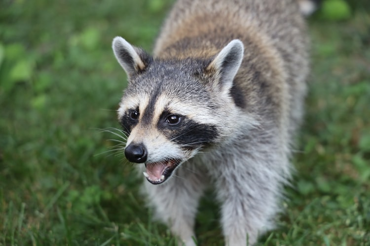

The 3 Species
代表的な3つの外来種
ミシシッピアカミミガメ
Red-eared Slider — Trachemys scripta elegans
具体的な現状
1960年代よりペットとして大量輸入。「ミドリガメ」の名で親しまれたが飼育放棄が続出。
繁殖地域
全国の河川・池・公園の池に広く定着。関東・近畿で特に個体数が多い。
被害状況
在来種のニホンイシガメを競争で圧迫。水草を食い荒らし、水辺の生態系を破壊。
現在までの対策
2023年より条件付特定外来生物に指定。新規販売・輸入は原則禁止となった。
今後の課題
既に野外に大量定着しており根絶は困難。既存個体の管理と、飼育中個体の適切な処置（引き取り施設の整備）が急務。

No. 02アライグマ
Common Raccoon — Procyon lotor
具体的な現状
1977年のアニメ放映後にペットブーム。飼いきれなくなった個体が各地で野生化した。
繁殖地域
北海道から九州まで全国に分布。特に北海道と関東での生息数が多い。
被害状況
農作物（スイカ・トウモロコシなど）への食害、屋根裏への侵入・営巣による家屋被害が深刻。
現在までの対策
2004年に特定外来生物に指定。自治体による捕獲・駆除が進むが、個体数は依然多い。
今後の課題
繁殖力が高く根絶は現実的でない。地域ごとの継続的な管理計画と、新規流入（ペット放棄）の防止が課題。
 No. 03
No. 03
ウシガエル
American Bullfrog — Lithobates catesbeianus
具体的な現状
1918年に食用（食肉・食材）として北米から輸入。その後養殖場から逃げ出し野生化。
繁殖地域
全国の水田・湿地・河川に定着。温暖な地域での繁殖密度が特に高い。
被害状況
魚・両生類・小動物など手当たり次第に捕食。在来のカエル類の個体数減少に深く関係。
現在までの対策
特定外来生物に指定され、電気ショッカーや罠による駆除が各地で実施されている。
今後の課題
オタマジャクシの段階から除去しないと効果が薄い。水田農家との連携による早期発見・早期駆除体制の構築が必要。